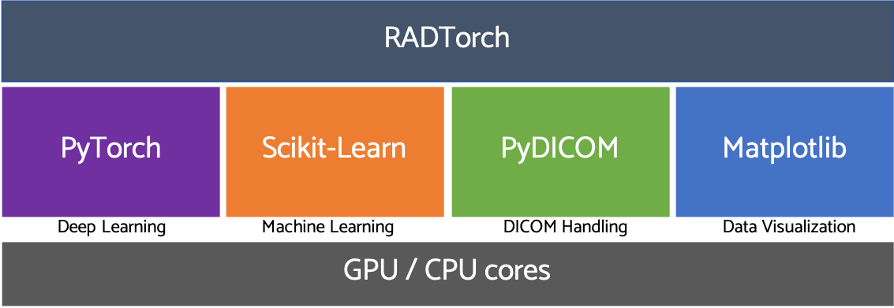

RADTorch The Radiology Machine Learning Tool Kit
About RADTorch
RADTorch provides a package of higher level functions and classes that significantly decrease the amount of time needed for implementation of different machine and deep learning algorithms on DICOM medical images. The most important feature of RADTorch tool kit is probably "piplines" which, for example, allows users to obtain a state of the art medical image classifier with as little as 2 lines of code. The different functions and classes included in RADTorch are built upon PyTorch, PyDICOM, Matplotlib and Scikit-learn.
RADTorch was developed and is currently maintained by Mohamed Elbanan, MD: a Radiology Resident at Yale New Haven Health System, Clinical Research Affiliate at Yale School of Medicine and a Machine-learning enthusiast.

Install RADTorch
RADTorch tool kit and its dependencies can be installed using the following terminal commands:
git clone github.com/radtorch/radtorch.git
pip3 install radtorch/.
To uninstall simply use:
pip3 uninstall radtorch
Quick Start Guide
Running a state of the art DICOM image classifier can be run using the Image Classification Pipeline using the commands:
from radtorch import pipeline
clf = pipeline.Image_Classification(data_directory='path to data directory')
clf.train_classifier()
Supported Neural Network Architectures
| Architecture | Default Image Size | Number of Output Features |
|---|---|---|
| VGG16 | 224x224 | 4096 |
| VGG18 | 224x224 | 4096 |
| ResNet50 | 224x224 | 2048 |
| ResNet101 | 224x224 | 2048 |
| ResNet152 | 224x224 | 2048 |
Contributing to RADTorch
RadTorch is on GitHub. Bug reports and pull requests are welcome.
License
MIT License, Copyright © 2020 Mohamed Elbanan, MD
Permission is hereby granted, free of charge, to any person obtaining a copy of this software and associated documentation files (the "Software"), to deal in the Software without restriction, including without limitation the rights to use, copy, modify, merge, publish, distribute, sublicense, and/or sell copies of the Software, and to permit persons to whom the Software is furnished to do so, subject to the following conditions: The above copyright notice and this permission notice shall be included in all copies or substantial portions of the Software.
THE SOFTWARE IS PROVIDED "AS IS", WITHOUT WARRANTY OF ANY KIND, EXPRESS OR IMPLIED, INCLUDING BUT NOT LIMITED TO THE WARRANTIES OF MERCHANTABILITY, FITNESS FOR A PARTICULAR PURPOSE AND NONINFRINGEMENT. IN NO EVENT SHALL THE AUTHORS OR COPYRIGHT HOLDERS BE LIABLE FOR ANY CLAIM, DAMAGES OR OTHER LIABILITY, WHETHER IN AN ACTION OF CONTRACT, TORT OR OTHERWISE, ARISING FROM, OUT OF OR IN CONNECTION WITH THE SOFTWARE OR THE USE OR OTHER DEALINGS IN THE SOFTWARE.
Sub-modules
radtorch.datautilsradtorch.dicomutilsradtorch.generalutilsradtorch.modelsutilsradtorch.pipelineradtorch.visutils